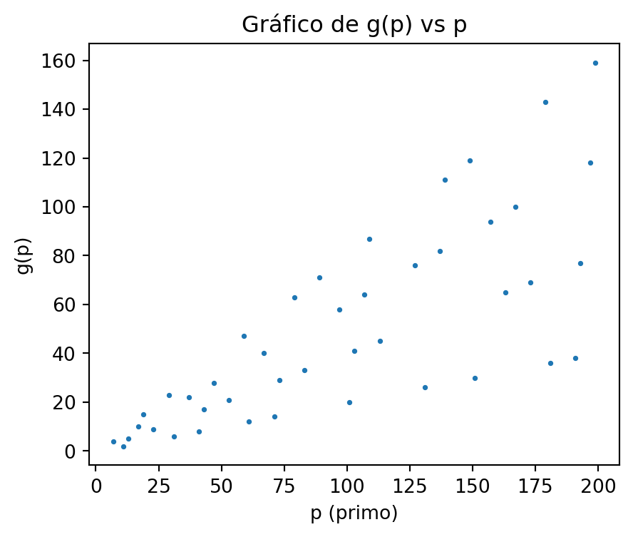

La matemática es un lenguaje que permite describir de forma cuantitativa y cualitativa nuestro entorno. Este lenguaje que se construye a partir de la sintaxis de la lógica, cruza barreras idiológicas, económicas, étnicas, de género y cualquir otra cimentada por el humano.
Múltiplos de primos
Todo número par \(2N\) es de la forma \[
2N \equiv 0 \mod 6, \quad 2N \equiv 2 \mod 6, \quad \text{ ó } \quad 2N \equiv 4 \mod 6,
\]
y como \(0\), \(2\) y \(4\) se obtienen en \(\mathbb{Z}_6\) a partir de la suma de \(1\) y/o \(5\), \((1 + 5 = 0\), , \(1 + 1 = 2\), , \(5 + 5 = 4)\), entonces todo par \(2N,\) y en particular \(2N\) no negativo, se puede escribir como la suma de dos elementos pertenecientes a los conjuntos \[
A = \{ 6x + 1 \}_{x \in \mathbb{N}_0} \text{ y } B = \{ 6y + 5 \}_{y \in \mathbb{N}_0}.
\tag{1}\]
y ya que los elementos de \(A\) y \(B\) no son divisibles por \(2\) ni por \(3\) entonces:
Lema 1 Todo número par \(2N \geq 6\) se puede escribir como la suma de dos números no divisibles por \(2\) ni por \(3.\)
En los conjuntos 1 siempre posible encontrar, para ciertos valores de \(x\) e \(y\), múltiplos de algún primo \(p\). En este caso, \(x\) e \(y\) deberían de satisfacer las siguientes ecuaciones modulares \[
6x \equiv (p - 1) \mod{p},
\]\[
6y \equiv (p - 5) \mod{p},
\]
cuya solución se obtiene estudiando el caso de si \(p-1\) es un múltiplo de \(6\), o si \(p-5\) es un múltiplo de \(6\).
S1. Si \(p-1\) es divisible por \(6,\) entonces \[
x \equiv a \mod{p} \quad \text{ con } \quad a = \frac{p-1}{6}
\tag{2}\] y \[
y \equiv b \mod{p} \quad \text{ con } \quad b = 5a
\tag{3}\]
S2. Si \(p-5\) es divisible por \(6,\) entonces \[
y \equiv b \mod{p} \quad \text{ con } \quad b = \frac{p-5}{6}
\tag{4}\] y \[
x \equiv a \mod{p} \quad \text{ con } a = \frac{5p - 1}{6}
\tag{5}\]
En ambas situaciones S1. y S2. es claro que \(a + b = p-1\)
Ejemplo 1 Para \(p = 31\) (situación S1.) tenemos que \(a = 5\) y \(b = 25.\) De acuerdo con esto los elementos de los conjuntos 1 tomando \(x \equiv 5 \mod{31}\) y \(y \equiv 25 \mod{31}\) son todos múltiplos de \(31\) no divisibles por \(2\) ni por \(3.\) Por ejemplo, si \(x = 1245\) y \(y = 366\) obtenemos en \(A\) y \(B\) respectivamente los números \(7471\) y \(2201\) ambos divisibles por \(31\).
Ejemplo 2 Para \(p = 29\) (situación S2.) tenemos que \(b = 4\) y \(a = 24.\) De acuerdo con esto los elementos de los conjuntos 1 tomando \(y \equiv 4 \mod{29}\) y \(x \equiv 24 \mod{29}\) son todos múltiplos de \(29\) no divisibles por \(2\) ni por \(3.\) Por ejemplo, si \(x = 691\) y \(y = 903\) obtenemos en \(A\) y \(B\) respectivamente los números \(4147\) y \(5423\) ambos divisibles por \(29\).
Esquivando múltiplos de primos
Sean \(\alpha\) y \(\beta\) dos números múltiplos de un primo \(p\), pertenecientes a cualquiera o ambos conjuntos \(A\) y \(B.\) Es claro que \(\alpha + \beta = 2N\) es un número par.
Nuestro propósito ahora es encontrar una forma de reescribir la suma \(\alpha + \beta\) por otra \(\alpha' + \beta'\) en donde \(\alpha'\) y \(\beta'\) sean elementos de \(A\) y \(B,\) no múltiplos de \(p\) y cuya suma sea igualmente \(2N.\)
Estudiaremos dos casos posibles, uno cuando queremos esquivar múltiplos de un mismo primo en el conjunto \(A\) y otro caso en donde queremos esquivar múltiplos de un mismo primo en el conjunto \(B\).
C1 Sean \(\alpha\) y \(\beta\) elementos del conjunto \(A,\) véase ecuación 1, ambos múltiplos de un primo \(p\) siendo \(p-1\) un múltiplo de \(6.\) Es claro que \[
\begin{align*}
2N & = \alpha + \beta
\\
& = 6(x_1 + x_2) + 2
\end{align*}
\] en donde \(x_1 , x_2 \equiv a \mod{p},\) con \(a\) como en 2. Ahora bien, una de las tantas formas de escribir \(a\) como un elemento de \(\mathbb{Z}_p\) es por ejemplo \[
a = 6a + (a + 1) \text{ con } 6a, a, 1 \in \mathbb{Z}_p.
\] y en este caso \[
2a = p - 2 + (2a + 2).
\] Si tomamos \[
\begin{align*}
& x_1' = (p-2) \mod p
\\
& x_2' = (2a + 2) \mod p
\end{align*}
\tag{6}\] entonces nuestros nuevos candidatos para \(\alpha'\) y \(\beta'\) serían \[
\alpha' = 6x_1' + 1 \quad \text{ y } \quad \beta' = 6x_2' + 1
\]
Ejemplo 3 Considere los números \(\alpha = 247\) y \(\beta = 589\) ambos son elementos del conjunto \(A\) y múltiplos de \(p = 19\). En este caso \(a = 3\) y de acuerdo con 6 obtenemos \[
x_1' \equiv 17 \mod{19} \quad \text{ y } \quad x_2' \equiv 8 \mod{19}
\] De acuerdo con esto, si
siendo \(s\) y \(t\) números enteros no negativos, nos permite escribir \(836\) como la suma de dos números no divibles por \(2\), \(3\) y \(19\). En efecto, al reducir 7 obtenemos \[
s + t = 6
\] y las combinaciones \((0,6),\)\((1,5),\)\((2,4),\)\((3,3),\)\((4,2),\)\((5,1)\) y \((6,0)\) de la pareja \((s, t)\) al reemplazarse en 7 permiten escribir el número \(836\) en las formas \[
\begin{align*}
& 836 = 103 + 733 = 217 + 619 = 331 + 505
\\
& 836 = 445 + 391 = 559 + 277 = 673 + 163 = 787 + 49,
\end{align*}
\] aquí todos estos sumandos no son divisibles por \(2\), \(3\) y \(19\).
C2 Sean \(\alpha\) y \(\beta\) elementos del conjunto \(B\) ambos múltiplos de un primo \(p\) siendo \(p-5\) múltiplo de \(6.\) Es claro que \[
\begin{align*}
2N & = \alpha + \beta
\\
& = 6(y_1 + y_2) + 2
\end{align*}
\] en donde \(y_1 , y_2 \equiv b \mod{p},\) con \(b\) como 4. Una de las tantas formas de escribir \(b\) como un elemento de \(\mathbb{Z}_p\) es por ejemplo \[
b = 2b + (p-b) \text{ para } 2b, p-b \in \mathbb{Z}_p.
\] y en este caso \[
2b = 4b + (p - 2b)
\] Si tomamos \[
\begin{align*}
& y_1' = 4b \mod p
\\
& y_2' = (p - 2b) \mod p
\end{align*}
\tag{8}\] entonces nuestros candidatos para \(\alpha'\) y \(\beta'\) serían \[
\alpha' = 6y_1' + 5 \quad \text{ y } \quad \beta' = 6y_2' + 5
\]
Ejemplo 4 Considere los números \(\alpha = 893\) y \(\beta = 2021\) ambos elementos del conjunto \(B\) múltiplos de \(p = 47\). En este caso \(b = 7\) de acuerdo con 8 obtenemos
siendo \(s\) y \(t\) números enteros no negativos, nos permite escribir \(2914\) como la suma de dos números no divibles por \(2\), \(3\) y \(47\). En efecto, al reducir 9 obtenemos \[
s + t = 9
\] y las combinaciones \((0,9),\)\((1,8),\)\((2,7),\)\((3,6),\)\((4,5),\)\((5,4)\), \((6,3)\), \((7, 2)\), \((8, 1)\) y \((9,0)\) de la pareja \((s, t)\) al reemplazarse en 9 permiten escribir el número \(2914\) en las formas
Empleando las técnicas vistas en la sección anterior podemos determinar de cuántas formas es posible escribir un número par sin emplear múltiplos de \(2\), \(3\) y \(5\).
A lo largo de nuestras discusiones emplearemos la siguiente función
\[
f(n) =
\begin{cases}
\dfrac{n}{2} & \text{ si } n \text{ es par,}
\\
\\
\Big\lfloor \dfrac{n}{2} \Big\rfloor + 1 & \text{ si } n \text{ es impar.}
\end{cases}
\tag{10}\]
Par \(2N\) con \(N \equiv 1 \mod 3\)
Si \(2N\) es un número par tal que \(N \equiv 1 \mod 3\) entonces es claro que \(2N\) se puede escribir como la suma de dos enteros \(\alpha_1\) y \(\alpha_2\) ambos pertenecientes al conjunto \(A\).
Supongamos que \(\alpha_1 = 6x_1 + 1\) con \(x_1 \equiv r_1 \mod 5\) y que \(\alpha_2 = 6x_2 + 1\) con \(x_2 \equiv r_2 \mod 5\).
Cada pareja \((r_1, r_2)\) solución de 13 es de la forma \((n , r - n )\) para \(n = 0, \ldots , r\) y \(( r + n, 5 - n )\) para \(n = 1, \ldots , 4 - r\), sin embargo como no queremos múltiplos de \(5\) en los elementos del conjunto \(A\) cuya suma sea \(2N\), entonces debemos descartar el valor de \(4\) para \(r_1\) y \(r_2\) en nuestras soluciones.
Si hacemos
\[
j = m - 5 \Big\lfloor \frac{m}{5} \Big\rfloor.
\]
entonces
\[
s + t = \Big\lfloor \frac{m}{5} \Big\rfloor.
\]
Debido a la simetría de la expresión 11 el número de parejas cuya suma es \(2N\) con \(j = 2, 3\) es
En el caso en que \(j = 4\) debido a que \(r_1, r_2\) pueden solo tomar los valores de \(1\), \(2\) y \(3\) se tiene que
\[
n_s = f \left(\dfrac{3m + 3}{5} \right)
\]
import numpy as npimport matplotlib.pyplot as plt"""La función pr(n) devuelve el valor de 1 si n en un número no divisible por 2,3 y 5. De lo contrario devuelve el valor de 0."""def pr(x): a = [2,3,5] i =0while (i <=2): cociente = x//a[i]if (x==cociente*a[i]): i =4else: i = i +1if (i >3):return0else:return1"""La función ng(n) calcula el número de parejas de números no divisiblespor 2, 3, y 5 cuya suma es n."""def ng(x): lg = [] par_mitad =int(x/2)for i inrange(1, par_mitad+1):if pr(i) ==1and pr(x - i) ==1: lg.append([i, x - i])returnlen(lg)"""Las funciones f y ns corresponden con los desarrollos en el documento"""def f(x):if x %2==0:return x/2else:return np.floor(x/2) +1def ns(x): m = (x -2)/6if m%5==0:return f(1+ m/5) + np.floor(m/5)if m%5==1:return (1+ np.floor(m/5)) + f( np.floor(m/5))if m %5==2or m %5==3:return f((1+ m -5*np.floor(m/5))*(1+ np.floor(m/5)))if m%5==4:return f( (3*m +3)/5 ) """Gráfico"""puntos = [k for k inrange(1, 500 )]valores = [2*(3*k+1) for k in puntos]plt.figure(figsize = (5,4))plt.scatter(valores, [ns(k) for k in valores], s =2)plt.title('Gráfico de ns vs 2N')plt.xlabel('2N , N == 1 mod 3')plt.ylabel('ns')plt.show()"""Un ejemplo numérico y analíticomodifique el valor de k"""print('El siguiente es un ejemplo numérico ')k =894numero =2*(3*k +1)print(f'Número par: {numero}')print(f'Cómputo numérico del número de parejas: {ng(numero)}')print(f'Cálculo analítico del número de parejas: {ns(numero)}')

El siguiente es un ejemplo numérico
Número par: 5366
Cómputo numérico del número de parejas: 269
Cálculo analítico del número de parejas: 269.0
Podemos ir un poco más lejos en la posibilidad de escribir un número par \(2N\) con \(N \equiv 1 \mod 3\) como la suma de dos números no divisibles por múltiplos de \(2\), \(3\) y \(5\). Si partimos del hecho de que
Siendo \(m\) un entero fijo tal que \(m \geq 6\) y \(0 \leq q \leq m\). Note que siempre es posible encontrar \(r_1\) y \(t\) tales que \(q \equiv (1 + \tau) \mod 7\) con \(\tau \not \equiv 0 \mod 7.\) Ahora bien si
\[
m - q \equiv 1 \mod 7
\]
entonces
\[
r - 1 - q \equiv 0 \mod 7
\]
en donde \(r\) es tal que \(m \equiv r \mod 7.\) Los anterior sugiere que si \(q_1\) y \(q_2\) pertenecen al conjunto de los \(q\) tales que \(q \equiv (1 + \tau) \mod 7\) con \(\tau\) distintos para cada \(q,\) digamos \(\tau_1\) para \(q_1\) y \(\tau_2\) para \(q_2\) entonces \(\tau_2 - \tau_1 \equiv 0 \mod 7\) lo cual no es posible pues simplemente basta dejar un \(t\) fijo y cambiar \(r_1\) y \(r_2\) en cada caso.